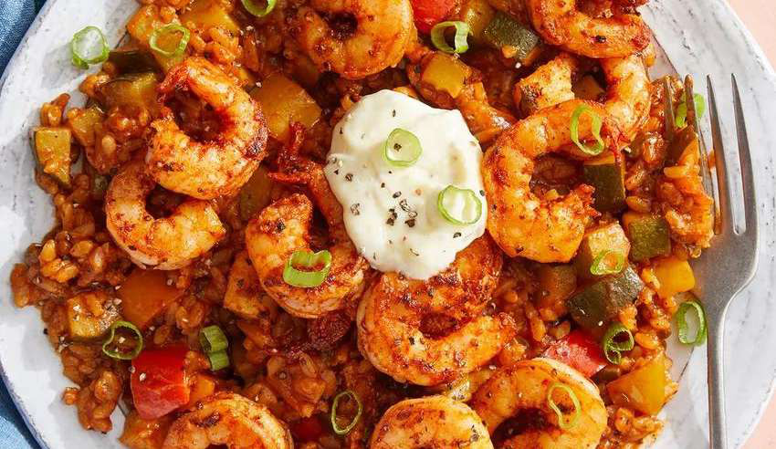

Chili Garlic Prawn Bowl

2 minutes
468 kcal • 37g protein • 11g fat • 52g carbs
Ingredients
- 70g Cooked Uncle Ben's Tex-mex
- Style
- 100g Cooked White Rice
- 80g Nandos Garlic Peri Sauce
- 200g Prawns
- 5g Garlic (diced)
- 1/2 Chilli (chopped)
- 1/2 Tsp Olive Oil (optional)
- 20g Spring Onion
- 1 Tsp Paprika
- 2 Tbsp Low Fat Greek Yoghurt
- Juice from half a lemon
- 1/2 tsp dill
- 1/2 tsp minced garlic
- 1/2 tsp pepper
Steps
- Season prawns with paprika, salt and parsley and cook in a pan over medium heat.
- Once cooked, remove prawns and in the same pan add 80g of nandos garlic peri peri sauce with 5g of diced garlic. Simmer for 1-2 minutes & gently mix.
- Add the prawns back into the pan with the sauce & mix together for 1-2 minutes then place the prawns to the side again once marinated.
- Using the same pan add 100g of cooked white rice & 70g of Uncle Ben's Tex Mex Stle. Mix together for 1-2 minutes so that the leftover sauce from the prawns soaks into the rice mixture
- In a separate bowl, mix low fat greek yoghurt, lemon juice, dill, minced garlic and black pepper for your low calorie aioli.
- Now place the rice mix in a bowl & add the prawns on top with 20g of spring onion, 5g of chopped chilli and a dollop of your cool aioli, enjoy!
Source: “Healthy Meals that DON'T SUCK 2025” (PDF) — page 21